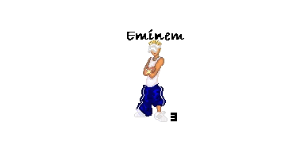
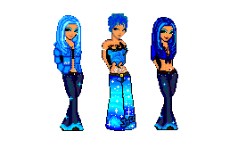
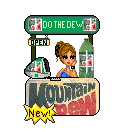
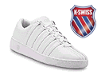
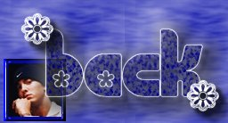
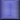

This is my EMINEM doll...He is my favorite rapper and famous person of all
time!!! LOL! My friend at
Cartoon Dollz
made this doll for me...

My favorite color is blue! SO here are my "Blue Dollz". I made them myself :)!

My favorite Pop is Mountain Dew so I adopted this Mountain Dew booth from
*:.+.:*Mystics*:.+.:*

I LOVE
K-Swiss
Shoes!

Click on a button below to navigate:

background, banner & buttons by my
mom!
All EMINEM pictures were borrowed from
The Gallery!
At
eminem.com
|
|